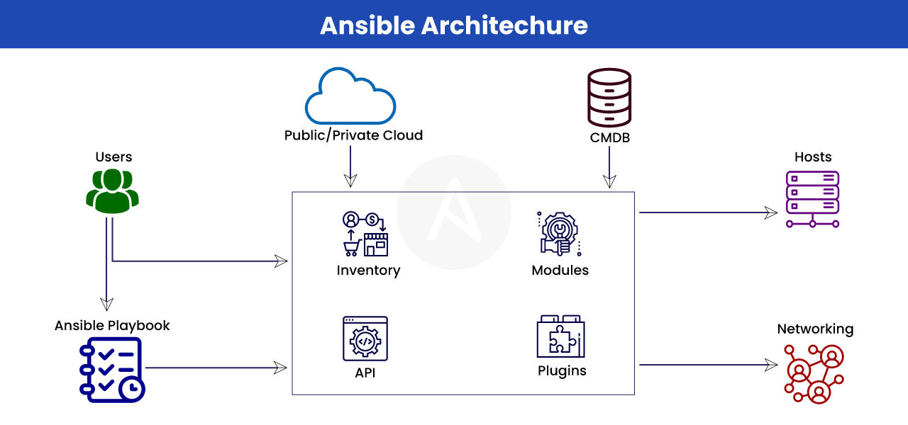
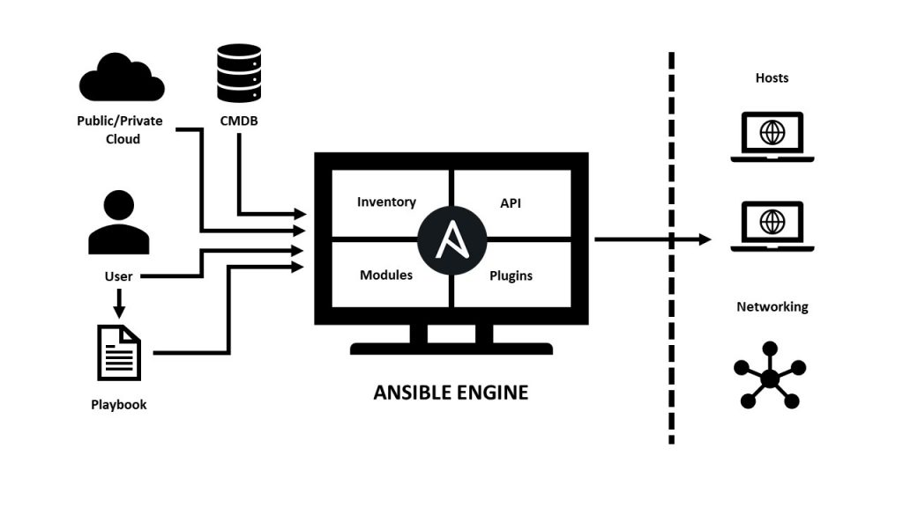

Ansible Labs¶


Getting Started Tip
Choose the preferred way to run the labs. If you encounter any issues, please contact your instructor.


Intro¶
- This tutorial is for teaching Ansible through hands-on labs designed as practical exercises.
- Each lab is packaged in its own folder and includes the files, playbooks, and assets required to complete the lab.
- Every lab folder includes a
READMEthat describes the lab’s objectives, tasks, and how to verify the solution. - The Ansible Labs are a series of Ansible automation exercises designed to teach players Ansible skills & features.
- The inspiration for this project is to provide practical learning experiences for Ansible.
Pre-Requirements¶
- This tutorial will test your
AnsibleandLinuxskills. - You should be familiar with the following topics:
- Basic Linux commands
- Linux File system navigation
- Basic knowledge of
Docker(if you choose to run it with Docker) - Basic knowledge of YAML
- For advanced Labs:
Ansiblebasics (inventory,playbooks,modules)
Usage¶
- There are several ways to run the Ansible Labs.
- Choose the method that works best for you.
 Killercoda (Recommended)
Killercoda (Recommended)- 🐳 Docker
- 📜 From Source
 Using Google Cloud Shell
Using Google Cloud Shell
- The easiest way to get started with the labs
- Learn Ansible in your browser without any local installation
Benefits:
- No installation required
- Pre-configured environment
- Works on any device with a web browser
- All tools pre-installed
Using Docker is the easiest way to get started locally with the labs:
# Change to the Labs directory
cd Labs/000-setup
# Run the setup lab using Docker Compose
docker-compose up -d
Prerequisites:
- Docker and Docker Compose installed on your system
- No additional setup required
For those who prefer to run it directly on their machine:
# Clone the repository
git clone https://github.com/nirgeier/AnsibleLabs.git
# Change to the Labs directory
cd AnsibleLabs/Labs
# Start with the setup lab
cd 000-setup
# Follow the instructions in the README of each lab
cat README.md
- Ansible installed on your system
- A Unix-like operating system (Linux, macOS, or Windows with WSL)
- Basic command-line tools
- Google Cloud Shell provides a free, browser-based environment with all necessary tools pre-installed.
- Click on the
Open in Google Cloud Shellbutton below:

- The repository will automatically be cloned into a free Cloud instance.
- Use CTRL + click to open it in a new window.
- Follow the instructions in the README of each lab.
Benefits:
- No local installation required
- Pre-configured environment
- Works on any device with a web browser
- All tools pre-installed
- Free tier available
Lab Breakdown
- If you choose to run the labs locally using Docker or From Source, follow the steps below to set up your environment.
- Make sure you have the necessary tools installed.
- Follow the instructions in the README of each lab.
- Review the Dockerfile(s) and docker-compose.yml for container configurations.
02. Build From Source¶
- Clone the git repo:
git clone https://github.com/nirgeier/AnsibleLabs.git - Navigate to the Labs directory:
cd AnsibleLabs/Labs/000-setup - The lab contains the
docker-composefile along with the Dockerfile(s) The containers are based upon ubuntu and are published to DockerHub as well. - Build the demo containers
- The docker-compose will create
ansible-controllerwhich will server as our controller to execute ansible playbooks on our demo servers defined by the nameslinux-server-X
Labs containers
| Container | Content |
|---|---|
🐳 ansible-controller |
Linux container with ansible installed |
🐳 linux-server-1 |
Linux container with ssh only (no ansible installed) |
🐳 linux-server-2 |
Linux container with ssh only (no ansible installed) |
🐳 linux-server-3 |
Linux container with ssh only (no ansible installed) |
- For the demo we will also need a shared folder(s) where the certificates and the configuration will be stored
- The shared folder(s) will be mounted into the containers
- The containers will have access to the shared folder(s) for reading and writing files
- The shared folder(s) will be used to store the Ansible playbooks and inventory files
- The shared folder(s) will be mounted at
/labs-scriptsin the containers
- Ensure you have the necessary permissions to run Docker commands or Ansible playbooks on your system.
- Enjoy, and don’t forget to star the project on GitHub!
Preface¶
What is Ansible?¶
Ansibleis an open-source automation tool for IT tasks such as configuration management, application deployment, and task automation.AnsibleisConfiguration Managementtool which manage thestateof our servers, install the required packages and tools.- Other optional use cases can be
deployments,Provisioning new servers - The most powerful feature of
Ansibleis the ability to manage huge scale of servers regardless of their infrastructure (on prem, cloud, vm etc) Ansibleuses SSH to connect to servers and execute tasks defined in YAML playbooks, making it agentless and easy to use.Ansibleis widely used for managing infrastructure, ensuring consistency, and automating repetitive processes across various environments (on-premises, cloud, VMs, etc.).
How Ansible Works¶

- Ansible is an
agentless tool. - Ansible uses
sshforpulling modulesand for managing the nodes - Ansible is based upon
YAML - An
Ansible playbookis a file that contains a set of instructions that Ansible can use to automate tasks on remote hosts. Playbooksare written inYAML, a human-readable markup language. A playbook typically consists of one or moreplays, a collection of tasks run in sequence.
How Ansible Playbooks Work¶
- Here’s a brief overview of how
Ansible playbookswork:
-
Playbook Structure¶
-
A
playbookis composed of one or moreplaysin an ordered list. -
Each
playexecutes part of the overall goal of theplaybook, running one or more tasks. - Each task calls an
Ansiblemodule.
-
-
Playbook Execution¶
-
A
playbookruns in order from top to bottom. -
Within each
play, tasks also run in order from top to bottom. -
Playbooks with multiple
playscan orchestrate multi-machine deployments.
-
-
Task Execution¶
-
Tasksare executed bymodules, each of which performs a specific task in a playbook. -
There are thousands of
Ansible modulesthat perform all kinds of IT tasks.
-
-
Reusability¶
-
Playbooksoffer a repeatable, reusable, simple configuration management and multi-machine deployment system. -
If you need to execute a
taskwithAnsiblemore than once, write aplaybookand put it under source control.
-
- Playbooks are one of the core features of Ansible and tell Ansible what to execute.
- They are used in complex scenarios.
- They serve as frameworks of pre-written code that developers can use ad-hoc or as a starting template.
- They can be saved, shared, or reused indefinitely, making it easier for IT teams to codify operational knowledge and ensure that the same actions are performed consistently.
Labs
List of Labs¶
| Lab | Summary | Build Status |
|---|---|---|
| Lab 000 - Setup | Setup lab environment with Ansible controller and Linux servers using Docker containers. | |
| Lab 001 - Verify Ansible Configuration | Verify Ansible configuration by creating and testing ansible.cfg, inventory, and ssh.config files. | |
| Lab 002 - No Inventory Example | Demonstrate the importance of inventory by showing behavior without it and then configuring one. | |
| Lab 003 - Commands & Modules | Learn about Ansible modules, focusing on the ping module and ad-hoc commands. | |
| Lab 004 - Playbooks | Introduction to Ansible playbooks, their structure, and basic usage. | |
| Lab 005 - Facts | Learn about Ansible facts, how to gather and use them in playbooks. | |
| Lab 006 - Git | Hands-on lab to create a playbook for installing Git and cloning repositories. | |
| Lab 007 - Create User | Hands-on lab to create a playbook for creating users on remote systems. | |
| Lab 008 - Challenges | Challenge lab combining user creation and Git operations. | — |
| Lab 009 - Roles | Learn about Ansible roles, their structure, and how to create and use them. | |
| Lab 010 - Loops and Conditionals | Learn about loops and conditional statements in Ansible playbooks. | |
| Lab 011 - Jinja2 Templating | Learn about Jinja2 templating for dynamic configuration files in Ansible. |

Lab 000 - Setup¶
- In this lab we will define and build docker containers which to be used in the next of labs.
- The lab structure consists of an Ansible controller & 3 Linux servers, all set inside docker containers.
01. Usage¶
- There are several ways to run the Ansible Labs.
- Choose the method that works best for you.
- Killercoda (Recommended)
- 🐳 Docker
- 📜 From Source
- Using Google Cloud Shell
- The easiest way to get started with the labs
- Learn Ansible in your browser without any local installation
Benefits:
- No installation required
- Pre-configured environment
- Works on any device with a web browser
- All tools pre-installed
Using Docker is the easiest way to get started locally with the labs:
# Change to the Labs directory
cd Labs/000-setup
# Run the setup lab using Docker Compose
docker-compose up -d
Prerequisites:
- Docker and Docker Compose installed on your system
- No additional setup required
For those who prefer to run it directly on their machine:
# Clone the repository
git clone https://github.com/nirgeier/AnsibleLabs.git
# Change to the Labs directory
cd AnsibleLabs/Labs
# Start with the setup lab
cd 000-setup
# Follow the instructions in the README of each lab
cat README.md
- Ansible installed on your system
- A Unix-like operating system (Linux, macOS, or Windows with WSL)
- Basic command-line tools
- Google Cloud Shell provides a free, browser-based environment with all necessary tools pre-installed.
- Click on the
Open in Google Cloud Shellbutton below:
- The repository will automatically be cloned into a free Cloud instance.
- Use CTRL + click to open it in a new window.
- Follow the instructions in the README of each lab.
Benefits:
- No local installation required
- Pre-configured environment
- Works on any device with a web browser
- All tools pre-installed
- Free tier available
Lab Breakdown
- If you choose to run the labs locally using Docker or From Source, follow the steps below to set up your environment.
- Make sure you have the necessary tools installed.
- Follow the instructions in the README of each lab.
- Review the Dockerfile(s) and docker-compose.yml for container configurations.
02. Build From Source¶
- Clone the git repo:
git clone https://github.com/nirgeier/AnsibleLabs.git - Navigate to the Labs directory:
cd AnsibleLabs/Labs/000-setup - The lab contains the
docker-composefile along with the Dockerfile(s) The containers are based upon ubuntu and are published to DockerHub as well. - Build the demo containers
- The docker-compose will create
ansible-controllerwhich will server as our controller to execute ansible playbooks on our demo servers defined by the nameslinux-server-X
Labs containers
| Container | Content |
|---|---|
🐳 ansible-controller |
Linux container with ansible installed |
🐳 linux-server-1 |
Linux container with ssh only (no ansible installed) |
🐳 linux-server-2 |
Linux container with ssh only (no ansible installed) |
🐳 linux-server-3 |
Linux container with ssh only (no ansible installed) |
- For the demo we will also need a shared folder(s) where the certificates and the configuration will be stored
- The shared folder(s) will be mounted into the containers
- The containers will have access to the shared folder(s) for reading and writing files
- The shared folder(s) will be used to store the Ansible playbooks and inventory files
- The shared folder(s) will be mounted at
/labs-scriptsin the containers
03. Core Concepts¶
- Create
Ansible Controllercontainer, which will be used to manage the other containers SSH Keys- The SSH keys will be generated and mounted into the containers- Initialize servers: Set up runtime directories, start demo containers via
Docker Compose, verifyAnsibleinstallation, extractSSH keysfrom servers, configure known hosts, check SSH services, and test SSH connections to each Linux server
04. The setup script(s)¶
# Build the Ansible container & the Demo servers
# The `_setup.sh` will build all we will need for this lab
./_setup.sh
05. Setup Scripts Breakdown¶
| Script | Content |
|---|---|
🗞️ 00-build-containers.sh |
📒 Init the shared folders |
| 🐳 Build the container(s) | |
🗞️ 01-init-servers.sh |
⏯ Initialize the containers |
| 🔐 Extract the ssh certificates | |
| ✓ verify that the ssh service is running in the containers | |
🗞️ 02-init-ansible.sh |
🚀 Initialize the ansible files |
📚 ansible.cfg |
|
📚 ssh.config |
|
📚 inventory |
06. Verify Containers¶
$ docker ps -a
# Expected output
IMAGE PORTS NAMES
---------------------------------------------------------------------------------------------------------------------
nirgeier/ansible-controller 22/tcp ansible-controller
nirgeier/linux-server 0.0.0.0:3001->22/tcp, 0.0.0.0:5001->5000/tcp, 0.0.0.0:8081->8080/tcp linux-server-1
nirgeier/linux-server 0.0.0.0:3002->22/tcp, 0.0.0.0:5002->5000/tcp, 0.0.0.0:8082->8080/tcp linux-server-2
nirgeier/linux-server 0.0.0.0:3003->22/tcp, 0.0.0.0:5003->5000/tcp, 0.0.0.0:8083->8080/tcp linux-server-3
07. Next Steps¶
- Proceed to Lab 001 - Verify Ansible configuration to start using Ansible with the configured environment.
- Don’t forget to check the logs for any errors or issues during the setup process.
- If you encounter any problems, refer to the troubleshooting section or open an issue on the GitHub repository.
- Enjoy learning Ansible!

Lab 001 - Verify Ansible configuration¶
- In this lab we will create the Ansible configuration and verify that it is configured correctly.
- This lab is based upon the previous lab and its
docker-compose. - In this lab we will learn how to use:
ansible.cfginventoryssh.config
Pre-Requirements¶
- Complete the previous lab in order to have the
Ansiblecontroller and theLinuxservers up and running.
01. Create configuration files¶
IMPORTANT!
- In this lab we will be placing the files under the
/labs-scriptsdirectory. - The directory is mounted to our docker container(s) under the
<PROJECT_ROOT>/runtimedirectory. - You are encouraged to review the
docker-compose.yamlfile throughout the lab session.
02. About ansible.cfg file¶
- What is
ansible.cfg?- The
ansible.cfgfile is an INI-like configuration file used to define various settings and parameters that influence how Ansible operates. - It allows users to customize Ansible’s behavior, such as specifying inventory locations, default module settings, connection options, and more.
- The
ansible.cfgfile can be placed in several locations, and Ansible will search for it in a specific order. - The configuration file is divided into sections, each containing various customizable parameters that control different aspects of Ansible’s functionality.
- Below we will create the
ansible.cfgfile, thessh.configfile and theinventoryfile.
- The
03. ansible.cfg locations:¶
- Reference: Official Ansible documentation: - Ansible Configuration Settings
- Ansible searches
ansible.cfgin a specific order. - The first file it finds will be used while ignoring the rest.
-
Ansible will search for the configuration file in the following order:
Search resource Description ANSIBLE_CONFIGenvironment variable if set ansible.cfgIn the current directory ~/.ansible.cfgUnder the home directory /etc/ansible/ansible.cfgOS common path -
In this exercise the environment variable
ANSIBLE_CONFIGis set in the docker container path/labs-scripts/.ansible.cfg
04. ansible.cfg structure:¶
-
The
ansible.cfgfile is divided into sections, each containing various customizable parameters. -
Main
ansible.cfgsettings:
| Setting | Description | Ansible Docs |
|---|---|---|
| [callback_plugins] | Specifies directories for callback plugins that customize output or trigger actions. | Docs |
| [connection] | Defines general connection settings that apply to all connection types. | Docs |
| [defaults] | Contains general settings for Ansible such as inventory location, verbosity, and log settings. | Docs |
| [diff] | Controls whether Ansible shows differences when applying configurations. | Docs |
| [galaxy] | Configures settings for Ansible Galaxy, a hub for sharing roles and collections. | Docs |
| [inventory] | Defines options related to inventory parsing and caching. | Docs |
| [logging] | Logging configuration, typically under [defaults] section using log_path. | Docs |
| [paramiko_connection] | Configures settings specific to the Paramiko SSH library. | Docs |
| [privilege_escalation] | Defines settings related to privilege escalation, such as sudo or become. | Docs |
| [ssh_connection] | Settings for SSH connections, (timeout, control settings etc). | Docs |
| [winrm] | Configures settings for Windows Remote Management (WinRM) connections. | Docs |
[callback_plugins]¶
- The
[callback_plugins]section specifies directories where Ansible looks for callback plugins, which can customize output or trigger actions based on playbook events.
[connection]¶
- The
[connection]section defines general connection settings that apply to all connection types.
[defaults]¶
- The
[defaults]section contains the general settings for Ansible (such as inventory location, verbosity and log settings). - It is the most commonly used section and is often the first place users look to customize their Ansible environment.
-
Here are some commonly used settings in the
[defaults]section:ask_pass- If set to true, Ansible will prompt for the SSH password.host_key_checking- If set to false, Ansible will not check SSH host keys.inventory- Specifies the path to the inventory file.log_path- Specifies the path to the log file.remote_user- Specifies the default remote user for SSH connections.timeout- Specifies the timeout for SSH connections in seconds.private_key_file- Specifies the path to the private key file for SSH authentication.become- If set to true, privilege escalation (e.g., sudo) will be used.become_method- Specifies the method to use for privilege escalation (e.g., sudo, su).become_user- Specifies the user to become when using privilege escalation.retry_files_enabled- If set to false, Ansible will not create retry files.gathering- Specifies how facts are gathered (e.g., smart, explicit, none).
[diff]¶
- Controls whether Ansible shows differences when applying configurations.
-
This can be useful for debugging and understanding changes.
always- Show differences even when the playbook is not run in check mode.context- The number of lines of context to show around changes.ignore- Do not show differences.diff- Show a unified diff of changes.unified- Show a unified diff of changes with context lines.
[galaxy]¶
- The
[galaxy]section configures settings for Ansible Galaxy, which is a hub for sharing and downloading Ansible roles and collections. - This section can be used to specify custom Galaxy servers, caching options, and other related settings.
-
Here is an example configuration for the
[galaxy]section:server_list- Specifies the list of Galaxy servers to use.cache_dir- Specifies the directory to cache downloaded roles and collections.role_file- Specifies the path to the file containing role definitions.collection_file- Specifies the path to the file containing collection definitions.requirements_file- Specifies the path to the file containing Galaxy requirements.role_file- Specifies the path to the file containing role definitions.
[inventory]¶
- Defines options related to inventory parsing and caching.
- Inventory is a critical component of Ansible, as it defines the hosts and groups of hosts that Ansible will manage.
- The inventory can be specified in various formats, including
INIfiles,YAMLfiles, and dynamic inventory scripts. - The inventory can also be cached to improve performance.
-
Here are some commonly used settings in the
[inventory]section:enable_plugins- Specifies the inventory plugins to use.cache- If set to true, inventory caching will be enabled.cache_plugin- Specifies the inventory cache plugin to use.cache_timeout- Specifies the timeout for inventory caching in seconds.inventory_ignore_extensions- Specifies file extensions to ignore when loading inventory files.inventory_loader- Specifies the inventory loader to use.strict- If set to true, Ansible will enforce strict inventory parsing.host_key_checking- If set to true, Ansible will check SSH host keys for inventory hosts.enable_inventory_cache- If set to true, inventory caching will be enabled.inventory_cache_timeout- Specifies the timeout for inventory caching in seconds.inventory_cache_connection- Specifies the connection string for the inventory cache plugin.
[logging]¶
- Ansible does not have a dedicated
[logging]section inansible.cfg. - Instead, logging is typically configured under the
[defaults]section using thelog_pathdirective. log_pathcontrols where Ansible logs its output.- If
log_pathis set, Ansible will write logs to the specified file, where as if it is not set, or left empty, logging will be disabled. - Here is an example of how to configure logging in the
[defaults]section:
[paramiko_connection]¶
- The
[paramiko_connection]section configures settings specific to the Paramiko SSH library, an alternative to OpenSSH for SSH connections. -
Here are some commonly used settings in the
[paramiko_connection]section:pty- If set to true, a pseudo-terminal will be allocated for the connection.look_for_keys- If set to true, Paramiko will look for SSH keysbanner_timeout- Specifies the timeout for receiving the SSH banner.keepalive- If set to true, keepalive messages will be sent to
[privilege_escalation]¶
- The
[privilege_escalation]section defines settings related to privilege escalation (such assudoorbecome). -
The
becomedirective is used to enable privilege escalation. -
Here are some commonly used settings in the
[privilege_escalation]section:become- If set to true, privilege escalation will be used.become_method- Specifies the method to use for privilege escalation (e.g., sudo, su).become_user- Specifies the user to become when using privilege escalation.become_ask_pass- If set to true, Ansible will prompt for the privilege escalation password.become_flags- Specifies any additional flags to pass to the privilege escalation command.become_exe- Specifies the path to the privilege escalation executable.become_pass- Specifies the password to use for privilege escalation.
[ssh_connection]¶
- Settings for SSH connections, (timeout, control settings etc).
- ControlMaster and ControlPersist options are used for SSH multiplexing, allowing multiple SSH sessions to share a single connection.
ssh_argscan be used to pass additional options to the SSH command.pipeliningcan be enabled to reduce the number of SSH connections.-
scp_if_sshspecifies whether to useSCPfor file transfers when using SSH.
[winrm]¶
- The
[winrm]section configures settings for Windows Remote Management (WinRM) connections, used for managing Windows hosts. -
Here are some commonly used settings in the
[winrm]section:transport- Specifies the transport method to use (e.g., basic, ntlm).cert_validation- Controls certificate validation (e.g., ignore, validate).read_timeout_sec- Specifies the read timeout for WinRM connections in seconds.operation_timeout_sec- Specifies the operation timeout for WinRM connections in seconds.max_retries- Specifies the maximum number of retries for WinRM connections.retry_delay- Specifies the delay between retries for WinRM connections.
05. Auto Generate ansible.cfg¶
- You can choose to execute
ansible-config init, which will generate a sample Ansible configuration file. -
As this is the main configuration file for our demo application, it is the content of
ansible.cfgwhich we will use in this lab.# File location: $RUNTIME_FOLDER/labs-scripts/ansible.cfg. # This is the default location of the inventory file, script, or directory that Ansible will use to determine what hosts it has available to talk to. # Defines that the inventory info is in a file named “inventory”. [defaults] inventory = inventory # Specifies remote hosts, so we do not need to config them in main SSH config. [ssh_connection] transport = ssh transfer_method = scp # The location of the SSH config file. # We will create this file in our next step. ssh_args = -F ssh.config \ -o ControlMaster=auto \ -o ControlPersist=60s \ -o StrictHostKeyChecking=no \ -o UserKnownHostsFile=/root/.ssh/known_hosts
06. Create the ssh.config file¶
- Ansible operates in Linux environments using
SSHprotocol, in order to run Ansible playbooks. - By default, Ansible uses the default SSH keys, unless provided with an SSH configuration file.
- Ansible ssh.config file allows you to define custom SSH settings for connecting to remote hosts.
- In this demo we will use our own
ssh.configconfiguration file.# File location: $RUNTIME_FOLDER/labs-scripts/ssh.config # Set up the desired hosts # keep in mind that we have set up the hosts in the docker-compose Host * # Disable host key checking # Avoid asking for the key-print authenticity StrictHostKeyChecking no UserKnownHostsFile /dev/null # Enable hashing known_host file HashKnownHosts yes # IdentityFile allows to specify private keys we wish to use for authentication # Authentication = the process of authentication # We will use the auto-generated SSH keys from our Docker container # List the desired servers # The hosts are defined in the docker-compose which we created in the setup lab Host linux-server-1 HostName linux-server-1 IdentityFile /root/.ssh/linux-server-1 User root Port 22 Host linux-server-2 HostName linux-server-2 IdentityFile /root/.ssh/linux-server-2 User root Port 22 Host linux-server-3 HostName linux-server-3 IdentityFile /root/.ssh/linux-server-3 User root Port 22
07. Create the inventory file¶
- See Ansible documentation: How to build your inventory.
- An Ansible inventory file is a
configuration filethat lists and categorizes the hosts Ansible will manage. - It provides a structured way to define
hostsandgroups, enabling efficient targeting and execution of tasks on specific hosts or groups of hosts. - The simplest inventory is a single file with a list of
hostsandgroups. - The inventory is written using the
INIformat. inventorycan be written in other formats as well, such asYAMLandDynamic Inventorywhich dynamically configure the inventory with scripts.- The default location for this file is
/etc/ansible/hosts. - If
/etc/ansible/hostsdoesn’t exists, ansible will look for user specific inventory file, to be placed at$HOME/.ansible/hosts - You can specify a different inventory file at the command line using the
-i <path>inventory option when executing Ansible commands or by exporting theANSIBLE_INVENTORYenvironment variable. - Using
-i <path>inventory option takes precedence over environment variable. - The inventory configuration we will use for the labs:
# File location: $RUNTIME_FOLDER/labs-scripts/inventory # List of servers which we want ansible to connect to # The names are defined in the docker-compose [servers] linux-server-1 ansible_ssh_common_args='-o UserKnownHostsFile=/root/.ssh/known_hosts' linux-server-2 ansible_ssh_common_args='-o UserKnownHostsFile=/root/.ssh/known_hosts' linux-server-3 ansible_ssh_common_args='-o UserKnownHostsFile=/root/.ssh/known_hosts' [all:vars] # Extra "global" variables for the inventory
This inventory file is written following these rules:
- Information is described by one node per line, such as
linux-server-xx. - A node line consists of an
identifier of the node (ex. linux-server-X)and ahost variable(s) (ex. ansible_host=xxxx), to be given to the node . - You can also specify an IP address or FQDN for the
linux-server-xxpart. - You can create a group of hosts with
[group_name]. In our inventory the group name is[servers]. -
You can use any group name except
[all]and[localhost](e.g.,[webservers]or[databases]can be used as group names for servers).[all]allis a special group that points to all nodes described in the inventory.- The
[all:vars]&group variablesare defined for the groupall.- When we use a group, we can use the whole group as “hosts” for ansible.
- A magic variable, represented by
ansible_xxxx, contains special values that control Ansible’s behavior and environment information that Ansible will automatically retrieve. - Details are explained in the variables section.
08. Prepare for execution¶
- Place the files under the shared folder or simply execute the script /Labs/000-setup/02-init-ansible.sh
- Verify that the controller can execute ansible /Labs/000-setup/01-init-servers.sh
Test Ansible configuration
- Now we are ready to start play with Ansible!
09. Check Ansible configuration¶
-
The first step is to test Ansible configuration
-
Sample output
ansible [core 2.17.9] config file = /labs-scripts/ansible.cfg configured module search path = ['/root/.ansible/plugins/modules', '/usr/share/ansible/plugins/modules'] ansible python module location = /usr/lib/python3/dist-packages/ansible ansible collection location = /root/.ansible/collections:/usr/share/ansible/collections executable location = /usr/bin/ansible python version = 3.12.3 (main, Feb 4 2025, 14:48:35) [GCC 13.3.0] (/usr/bin/python3) jinja version = 3.1.2 libyaml = True -
We are looking for the following line:
10. Basic ansible configuration¶
- Once all is ready, lets check if the controller can connect to the servers with the Ansible
pingcommand. -
pingis anAd-HocAnsible command that we will cover later on.# Ping the servers and check that they are "alive" docker exec ansible-controller sh -c "cd /labs-scripts && ansible all -m ping" ### Output * Executing: ansible all -m ping linux-server-2 | SUCCESS => { "ansible_facts": { "discovered_interpreter_python": "/usr/bin/python3" }, "changed": false, "ping": "pong" } linux-server-1 | SUCCESS => { "ansible_facts": { "discovered_interpreter_python": "/usr/bin/python3" }, "changed": false, "ping": "pong" } linux-server-3 | SUCCESS => { "ansible_facts": { "discovered_interpreter_python": "/usr/bin/python3" }, "changed": false, "ping": "pong" }

Lab 002 - No Inventory¶
- In this lab we will learn about Ansible inventory and how it affects automation tasks.
- We will start with an empty inventory and observe Ansible’s behavior with no hosts defined. Later, we will create and test the inventory file.
- This lab is based upon the previous lab and its docker-compose setup.
Pre-Requirements¶
- Complete the previous lab in order to have
Ansibleconfigured.
01. “Clear” the inventory¶
- Let’s clear the inventory from previous labs and walk through what is
inventory.
02. Create the inventory file¶
Ansible Inventory¶
- An
Ansibleinventorycan either be a single file or a collection of files - The
inventorydefines the[hosts]and[groups]of hosts upon whichAnsiblewill operate. - It’s simply a list of servers that
Ansiblecan connect with and manage.
Key features of Ansible inventory¶
- Can be in various formats, such as
INI,JSON,YAMLand more. YAMLbeing the most common format.inventorydefines the target hosts forplaybookexecution.inventoryorganizes hosts into logical groups for easier management.inventorycan store host-specific variables and group variables.inventorysupports nested groups (groups of groups).
03. inventory samples¶
- `INI` format
```ini
[webservers]
web1.example.com
web2.example.com
[database]
db1.example.com
```
- `YAML` format
```yaml
all:
hosts:
web1.example.com:
web2.example.com:
children:
database:
hosts:
db1.example.com:
```
- `JSON` format
```json
{
"all": {
"hosts": {
"web1.example.com": {
"ansible_port": 2222,
"http_port": 80
},
"web2.example.com": {
"ansible_port": 2223,
"http_port": 8080
}
},
"children": {
"database": {
"hosts": [
"db1.example.com"
]
}
}
}
}
```
Inventory types in Ansible¶
-
Static Inventory
- This is generally a simple text file (usually in INI or YAML format) that lists the hosts and their corresponding groups.
-
Dynamic Inventory
- This is generated by a script or a program that retrieves host information from an external source (such as cloud providers like
AWS,Azure, etc.),LDAPor from adatabase. - This allows for real-time updates and adaptability as environments change.
See an example of generating a
dynamic inventoryusingPythoncode for fetching data from a database:#!/usr/bin/env python import sqlite3 import json def get_inventory(): conn = sqlite3.connect('servers.db') cursor = conn.cursor() cursor.execute('SELECT hostname, group_name, ansible_user FROM servers') rows = cursor.fetchall() inventory = {'all': {'hosts': [], 'vars': {}}} for row in rows: hostname, group_name, ansible_user = row if group_name not in inventory: inventory[group_name] = {'hosts': [], 'vars': {}} inventory['all']['hosts'].append(hostname) inventory[group_name]['hosts'].append(hostname) inventory[group_name]['vars']['ansible_user'] = ansible_user conn.close() return inventory if __name__ == "__main__": print(json.dumps(get_inventory())) - This is generated by a script or a program that retrieves host information from an external source (such as cloud providers like
04. Lab exercise¶
-
Let’s create the inventory configuration that we will use for the labs:
05. No inventory invocation¶
-
Once all is ready, let’s check if the controller can connect to the servers using
ping# Ping the servers and check that they are "alive" docker exec ansible-controller sh -c "cd /labs-scripts && ansible all -m ping" ## Output ## ------------------------------------------------------------------------------- [WARNING]: provided hosts list is empty, only localhost is available. Note that the implicit localhost does not match 'all'
06. inventory invocation¶
- Fill in the inventory based upon the previous labs’ configuration and test it.
- Verify that the inventory is defined correctly with:
- Test the inventory file with
-
Suggested Solution
### ### List of servers which we want ansible to connect to ### The names are defined in the docker-compose ### [servers] linux-server-1 ansible_ssh_common_args='-o UserKnownHostsFile=/root/.ssh/known_hosts' linux-server-2 ansible_ssh_common_args='-o UserKnownHostsFile=/root/.ssh/known_hosts' linux-server-3 ansible_ssh_common_args='-o UserKnownHostsFile=/root/.ssh/known_hosts'
Lab 003 - Commands & Modules¶
- In this section, we will cover the Modules.
- Modules are important elements and act as the “heart” of
Ansible.

What is a Module?¶
- A module is a unit of code in Ansible that performs common operations in infrastructure management, such as configuring systems, installing software, or managing resources.
- Ansible has a huge number of modules.
- You can browser and search ansible builtin modules under the Build In Ansible Modules
- Module are used for task automation.
Sample Module - The build in ‘ping’ Module¶
- In this lab we will explore the build in
pingModule - The source code for this module is: https://github.com/ansible/ansible/blob/devel/lib/ansible/modules/ping.py
01. The ping module¶
- Source: https://github.com/ansible/ansible/blob/devel/lib/ansible/modules/ping.py
- Docs: https://docs.ansible.com/ansible/latest/collections/ansible/builtin/ping_module.html
From the docs:
- ansible.builtin.ping module – Try to connect to host, verify a usable python and return pong on success
- This module is part of ansible-core and included in all Ansible installations.
- In most cases, you can use the short module name
ping
- Now we will break down the code, fell free to browse and look on the full code Browse the code.
01.01. The ping source code¶
- At the time of writing this tutorial, the “implementation” of the
pingis the followingRETURN = ''' ping: description: Value provided with the O(data) parameter. returned: success type: str sample: pong ''' from ansible.module_utils.basic import AnsibleModule def main(): module = AnsibleModule( argument_spec=dict( data=dict(type='str', default='pong'), ), supports_check_mode=True ) if module.params['data'] == 'crash': raise Exception("boom") result = dict( ping=module.params['data'], ) module.exit_json(**result) if __name__ == '__main__': main()
02. List of modules¶
- Modules are managed in the form of `collection’, and each collection contains multiple related modules.
- List of Collections
Note: Up to version 2.9 Ansible included all modules by default, but the number of modules increased so much that it was changed to the current format (2.10 and later)
02. Using modules¶
- By default Ansible is installed with
ansible.builtinas the only collection. - A list of modules that are available in the
ansible.builtinclick here
02.01. Find modules for you OS¶
- To see which modules are available for you OS use this command:
ansible-doc -l ### Output (only first few lines) add_host Add a host (and alternatively a group) to the ansible-playbook in-memory inventor... apt Manages apt-packages apt_key Add or remove an apt key apt_repository Add and remove APT repositories assemble Assemble configuration files from fragments assert Asserts given expressions are true async_status Obtain status of asynchronous task blockinfile Insert/update/remove a text block surrounded by marker lines
02.02. Documentation¶
- To view documentation for a specific module:
# Display the ping documentation $ ansible-doc ping > ANSIBLE.BUILTIN.PING (/opt/homebrew/Cellar/ansible/9.4.0_1/libexec/lib/python3.12/site-packages/ansible/modules/ping> A trivial test module, this module always returns `pong' on successful contact. It does not make sense in playbooks, but it is useful from `/usr/bin/ansible' to verify the ability to login and that a usable Python is configured. This is NOT ICMP ping, this is just a trivial test module that requires Python on the remote-node. For Windows targets, use the [ansible.windows.win_ping] module instead. For Network targets, use the [ansible.netcommon.net_ping] module instead. ADDED IN: historical OPTIONS (= is mandatory): - data Data to return for the `ping' return value.
03. Common Ad-hoc command¶
- Invoking a module is referred to as
Ad-hoc command. - The syntax is the following:
| CLI option | Description |
| ------------------ | --------------------------------------------------------------------------- |
|
<servers>| Any server (singel, group or all) as defined in the inventory file | |-m <module_name>| Specifies the module name. | |-a <parameters>| Specifies the parameters to be passed to the module. Optional in most cases |
03.01. ping¶
- Docs: https://docs.ansible.com/ansible/latest/collections/ansible/builtin/ping_module.html
- We are already familiar with ping
[!TIP] This is a module that determines whether Ansible can “communicate as Ansible” to the node it is working on (which is different from ICMP used in the network). Ping module parameters are optional.
- Usage:
# Ping all server in the inventory
ansible all -m ping
# In our demo lab we will execute it like this:
docker exec ansible-controller sh -c "cd /labs-scripts && ansible all -m ping"
- Output
linux-server-1 | SUCCESS => { "ansible_facts": { "discovered_interpreter_python": "/usr/bin/python3" }, "changed": false, "ping": "pong" } linux-server-3 | SUCCESS => { "ansible_facts": { "discovered_interpreter_python": "/usr/bin/python3" }, "changed": false, "ping": "pong" } linux-server-2 | SUCCESS => { "ansible_facts": { "discovered_interpreter_python": "/usr/bin/python3" }, "changed": false, "ping": "pong" }
03.03. shell¶
- Docs: https://docs.ansible.com/ansible/latest/collections/ansible/builtin/shell_module.html
[!TIP] This is a module that Execute shell commands on targets
# Lets get the hostname of the server
ansible all -m shell -a 'hostname'
# In our demo lab we will execute it like this:
docker exec ansible-controller sh -c "cd /labs-scripts && ansible all -m shell -a 'hostname'"
-
Output¶

Hands-on¶
-
Figure out way to run the following (shell) command with
Ansible, on any of the servers: -
Use the ansible
commandmodule to print out the previous shell commands. -
Try to run the following command:
git config -l. > What is the result of this command?
Solution¶
uname -a
date
:arrow_backward: /Labs/002-no-inventory Back to labs list /Labs/004-playbooks :arrow_forward:
 
[](https://www.linkedin.com/in/nirgeier/)
[](mailto:nirgeier@gmail.com) [](mailto:nirg@codewizard.co.il)

[](https://www.linkedin.com/in/nirgeier/)
[](mailto:nirgeier@gmail.com) [](mailto:nirg@codewizard.co.il)


 If you appreciate the effort, Please
If you appreciate the effort, Please  this project
this project
Lab 004 - Playbooks¶
- In this section, we will cover Ansible Playbooks
- Playbook are “Ansible Scripts” and are one of the building blocks of Ansible.

- Lab 004 - Playbooks
- What are Playbook
- 01. Playbook Basics
- 01.01. YAML
- 01.02. Our first playbook
- 01.02. Writing Playbook
- Playbook content:
- 01.03. Hands-on - Our first playbook
- 02. Playbook syntax (Playbook Keywords)
- 02.01.
Play - 02.02. Quiz:
- 02.03. Playbook demo
- 02.03.01. Setting the env variable in the ansible controller
- 02.03.02. Passing the variable to the playbook
- 02.03.03. Using the environment
- 02.03.04. Permanently Set Environment Variables on Remote Hosts
- 02.03.05. Using
var_filesto include variables - 03. Tasks
- 03.01 Additional Tasks
What are Playbook¶
- In the previous labs, we executed ansible Ad-Hoc command which invoked modules.
- In real life we need more that just Modules…
- This is where
Ansible Playbookis jumping in. Ansible Playbooksare essentially blueprints of automation tasks.- They are written in
YAML, and are used to automate tasks on remote hosts. - In summary,
Ansible Playbooksoffer a repeatable, reusable, simple configuration management and multi-machine deployment system, well suited to deploying complex applications. - They are a powerful tool for automating infrastructure management.
Ansible Playbooks Key Points:¶
- Structure
A playbook is composed of one or more
playsin an ordered list (Sequence). Each play executes part of the overall goal of the playbook, running one or more tasks Each task calls anAnsible module. - Execution
- A playbook runs in order from top to bottom.
- Within each play, tasks also run in order from top to bottom.
- Playbooks with multiple
playscan orchestrate multi-machine deployments. - Functionality
- Playbooks can declare configurations, orchestrate steps of any manual ordered process, on multiple sets of machines, in a defined order, and launch tasks synchronously or asynchronously.
- Use Cases
- They are regularly used to automate IT infrastructure, networks, security systems, and code repositories like GitHub.
- IT staff can use playbooks to program applications, services, server nodes, and other devices.
- Reusability
- The conditions, variables, and tasks within playbooks can be saved, shared, or reused indefinitely.
- This makes it easier for IT teams to codify operational knowledge and ensure that the same actions are performed consistently.
01. Playbook Basics¶
01.01. YAML¶
- The
playbookis written in YAML format. - Playbooks can also be written in JSON format
- In this course we will only use YAML format.
- YAML is a text file .
- YAML uses Python-style indentation to indicate nesting and does not require quotes around most string values
- Files should start with
---. - Indentation has meanings and is extremely import !!!
- Indentation should be written in
space.tabwill result in an error. - The level of indentation (using spaces, not tabs) is used to denote structure
key:valuemakes it a dictionary format.- Key-Value Pairs: A dictionary in YAML is represented in a simple
key:valueform. - The colon must be followed by a space
- Lists: All members of a list are lines beginning at the same indentation level starting with a
-(a dash and a space). - Multi-Line Strings: Values can span multiple lines using
|or>. - Using a
Literal Block Scalar[|] will include the newlines and any trailing spaces. - Using a
Folded Block Scalar[>] will fold newlines to spaces. - Boolean Values: You can specify a boolean value (true/false) in several forms.
- Use lowercase
trueorfalsefor boolean values in dictionaries if you want to be compatible with default yamllint options.
YAML is case sensitive, so be careful with your capitalization.
01.02. Our first playbook¶
- Here is our first playbook example
- This example will list files in a given directory
---
# Run on all the hosts
- hosts: all
# Here we define our tasks
tasks:
# This is the first task
- name: List files in a directory
# As learned before this is the command module
# This command will list files in the home directory
command: ls ~
# register is used whenever we wish to save the output
# In this case it will be saved to a variable called 'files'
register: files
# This is the second tasks
# In this case the tasks will run in the declared sequence
- name: Print the list of files
# Using the builtin debug module
# The debug will print out our files list
# ** We need to use `stdout_lines` for that
debug:
msg: "{{ files.stdout_lines }}"
01.02. Writing Playbook¶
- Playbook are
YAMLfiles - Lets open editor and write the first playbook
Playbook content:¶
YAMLshould start with the---- Define the hosts we wish to run on. In this sample we will use
localhost - Define the playbook tasks
Its as simple as that
01.03. Hands-on - Our first playbook¶
-
Use this skeleton for our first playbook
-
Now lets fill in with content
- First lets define localhost as the host for this playbook
- Next steps is to define the tasks
[!TIP]
Like in every other programming/scripting language there is no “right” solution and the bellow solution will work like any solution that will work for you, so feel free to write it any way which works for you.
# List of hosts
- hosts: localhost
###
### In this sample we display several solutions
###
### We combine few commands like: `shell`, `debug`, `command` and more
###
# List of tasks
tasks:
# Using shell it will work, but no out put will be displayed out
# We will need to use register to display output
- name: Execute 'uname -a'
shell: uname -a
register: task_output
# Using register we can now display the output contents
# We must use `.stdout` to display the output itself
- name: Print 'uname -a' output
debug:
msg: "{{ task_output.stdout}}"
- Output:
* Executing ansible Ad-Hoc commands $ ansible localhost -m shell -a 'uname -a' localhost | CHANGED | rc=0 >> Linux 1fa29998d58c 5.15.0-105-generic #115-Ubuntu SMP Mon Apr 15 09:52:04 UTC 2024 aarch64 aarch64 aarch64 GNU/Linux ----------------------------------- * Executing ansible playbook $ cat 004-playbook.yaml # List of hosts - hosts: localhost ### ### In this sample we display several solutions ### ### We combine few commands like: `shell`, `debug`, `command` and more ### # List of tasks tasks: # Using shell it will work, but no out put will be displayed out # We will need to use register to display output - name: Execute 'uname -a' shell: uname -a register: task_output # Using register we can now display the output contents # We must use `.stdout` to display the output itself - name: Print 'uname -a' output debug: msg: "{{ task_output.stdout}}"
$ ansible-playbook 004-install-nginx.yaml
PLAY [localhost] ***************************************************************
TASK [Gathering Facts] *********************************************************
ok: [localhost]
TASK [Execute 'uname -a'] ******************************************************
changed: [localhost]
TASK [Display the output] ******************************************************
ok: [localhost] => {
"msg": "Linux 1fa29998d58c 5.15.0-105-generic #115-Ubuntu SMP Mon Apr 15
09:52:04 UTC 2024 aarch64 aarch64 aarch64 GNU/Linux"
}
PLAY RECAP *********************************************************************
localhost : ok=3 changed=1 unreachable=0 failed=0 skipped=0 rescued=0 ignored=0
- Complete the playbook, this time use command instead of shell¶
02. Playbook syntax (Playbook Keywords)¶
- In this section, we will more about playbooks syntax
02.01. Play¶
- Official documentation
- The top part of the playbook is called
Playand it defines the global behavior of for the entire playbook. - Here are some definitions which defined in the
Play
---
- name: The name of the play
# A list of groups, hosts or host pattern that translates into a list
# of hosts that are the play’s target.
hosts: localhost
# Boolean that controls if privilege escalation is used or not on
# Task execution.
# Implemented by the become plugin
become: yes
# User that you ‘become’ after using privilege escalation.
# The remote/login user must have permissions to become this user.
become_user:
# A dictionary that gets converted into environment vars to be provided
# for the task upon execution.
# This can ONLY be used with modules.
# This is not supported for any other type of plugins nor Ansible itself
# nor its configuration, it just sets the variables for the code responsible
# for executing the task.
# This is not a recommended way to pass in confidential data.
environment:
# Dictionary/map of variables
vars:
02.02. Quiz:¶
- Review the example below and try to answer the following questions:
- On which hosts the playbook should be executed?
- How we define the play?
- Which directives are defined in this playbook?
- How do we define variables?
- How do we use variables?
- How do we set up root user?
# # Install nginx # name: Install and start nginx # We should have this group in our inventory hosts: webservers # Variables # The `lookup` function is used to fetch the value of the environment variables vars: env: PORT: "{{ lookup('env','PORT') }}" PASSWORD: "{{ lookup('env','PASSWORD') }}" # Define the tasks tasks: - name: Install nginx apt: name: nginx state: present become: yes - name: Start nginx service service: name: nginx state: started become: yes - name: Create a new secret with environment variable shell: echo "secret:{{ PASSWORD }}" > /etc/secret become: yes - name: Open the port in firewall ufw: rule: allow port: "{{ PORT }}" proto: tcp become: yes
02.03. Playbook demo¶
- Execute the playbook by adding the required parameters to teh playbook
- This can be done by setting up the parameter prior to executing the playbook Or by adding the parameters to the playbook itself.
02.03.01. Setting the env variable in the ansible controller¶
# Example:
# 01. Setting the env variable in the ansible controller
export PORT=8080
# Use the -e/--extra-vars to inject environment variables into the playbook
ansible-playbook playbook.yaml -e "my_var=$MY_VAR"
# Using the lookup Plug to fetch the value of the environment variables
PORT: "{{ lookup('env','PORT') }}"
02.03.02. Passing the variable to the playbook¶
02.03.03. Using the environment¶
- Using the environment keyword in a task to set variables for that task:
# Example:
- name: Open the port in firewall
environment:
PORT: "8080"
ufw:
rule: allow
port: "{{ PORT }}"
proto: tcp
- Passing the environment to all the tasks in Playbook:
02.03.04. Permanently Set Environment Variables on Remote Hosts¶
- To persist variables (e.g., in .bashrc or /etc/environment):
# Example:
- name: Set permanent environment variable
lineinfile:
path: /etc/environment
line: 'PORT="8080"'
state: present
become: yes
02.03.05. Using var_files to include variables¶
- We can use a variable file to pass variables in a playbook
# Example
# Check the vars.yaml file in the same directory
- hosts: all
vars_files:
- vars.yaml # Include variables from vars.yaml
tasks:
- name: Print a variable
debug:
msg: "{{ http_port }}"
03. Tasks¶
-
https://docs.ansible.com/ansible/latest/playbook_guide/playbooks_intro.html#running-playbooks-in-check-mode
-
Lets write some playbooks tasks with parameters
- Take a look on
004-list-files.yamland follow the instructions in the comments - Answer the questions in the comments about the
with_itemsthe output of the playbook
03.01 Additional Tasks¶
- Run the playbook and see the output
- Run the playbook in
checkmode and see the output - Run the playbook with
--diffflag and see the output - Run the playbook with
--verboseflag and see the output - Run the playbook with
--verbose,--diffflags and see the output - Run the playbook with
--verbose,--diff,--checkflags and see the output
[!TIP] It’s considered best practice to use the FQDN name of all modules used in your playbook. It is done to prevent naming collision between builtin modules and community/self made ones.
:arrow_backward: /Labs/003-modules Back to labs list /Labs/005-facts :arrow_forward:

[](https://www.linkedin.com/in/nirgeier/)
[](mailto:nirgeier@gmail.com) [](mailto:nirg@codewizard.co.il)
If you appreciate the effort, Please this project
Lab 005 - Facts¶
- In this section, we will cover Ansible Facts
- Ansible facts are “Ansible Scripts” and are one of the building blocks of Ansible.
- Ansible facts are data related to your remote systems, including operating systems, IP addresses, attached filesystems, and more.
- Ansible facts are gathered about target nodes (host nodes to be configured) and returned back to controller nodes.
How to View Facts?¶
You can view facts of a remote machine by running:
🔹 Example Output (Truncated for brevity):
{
"ansible_facts": {
"ansible_distribution": "Ubuntu",
"ansible_distribution_version": "22.04",
"ansible_architecture": "x86_64",
"ansible_memory_mb": {
"real": {
"total": 7989,
"used": 2034
}
},
"ansible_default_ipv4": {
"address": "192.168.1.10",
"netmask": "255.255.255.0",
"gateway": "192.168.1.1"
}
}
}
How to Use Facts in Playbooks?¶
- Facts allows you to base your playbook logic on the properties of the target hosts.
- all facts are prefixed with
ansible_x.
Example: Installing Packages Based on OS¶
---
- hosts: all
tasks:
- name: Install Nginx on Debian using APT
ansible.builtin.apt:
name: nginx
state: present
when: ansible_distribution == "Ubuntu"
- name: Install Nginx on RedHat using DNF
ansible.builtin.dnf:
name: nginx
state: present
when: ansible_distribution == "CentOS"
Example: Conditional Execution Based on Memory¶
- name: Restart Service if Memory is Low
ansible.builtin.service:
name: my_service
state: restarted
when: ansible_memory_mb.real.total < 4000
Commonly Used Facts¶
System Information¶
| Fact | Description |
|---|---|
ansible_distribution |
OS name (Ubuntu, CentOS, Windows) |
ansible_distribution_version |
OS version (22.04, 9.1, 10) |
ansible_architecture |
System architecture (x86_64, arm) |
Networking¶
| Fact | Description |
|---|---|
ansible_default_ipv4.address |
Default IP address |
ansible_default_ipv4.gateway |
Default gateway |
ansible_fqdn |
Fully Qualified Domain Name |
ansible_dns.nameservers |
DNS servers |
Hardware¶
| Fact | Description |
|---|---|
ansible_memory_mb.real.total |
Total RAM in MB |
ansible_processor_count |
Number of CPUs |
ansible_processor_cores |
Number of CPU cores |
Disabling Fact Gathering¶
By default, Ansible gathers facts before running a playbook. To disable it:
- hosts: all
gather_facts: no
tasks:
- name: Print a message
debug:
msg: "Facts gathering is disabled!"
Custom Facts¶
You can define custom facts by creating .fact files in /etc/ansible/facts.d/ on the managed host.
Example: Creating a Custom Fact¶
1️⃣ Create a file /etc/ansible/facts.d/custom.fact with:
2️⃣ Retrieve the fact in a playbook:
Summary¶
🔹 Ansible facts provide system details dynamically.
🔹 They are automatically gathered using the setup module.
🔹 Useful for conditional logic in playbooks.
🔹 Facts include OS, networking, CPU, memory, and more.
🔹 Custom facts can be created for customized automation.
- Print the IP addresses of all the machines
- Bonus - Try print the addresss of
linux-server-2only without modifying the inventory file.
:arrow_backward: /Labs/004-playbooks Back to labs list /Labs/006-git :arrow_forward:

[](https://www.linkedin.com/in/nirgeier/)
[](mailto:nirgeier@gmail.com) [](mailto:nirg@codewizard.co.il)
If you appreciate the effort, Please this project
Hands On Lab¶
- Understand the Git Playbook (006-playbook-install-git)
- Try to write it yourself using the sample playbook
- Review the playbook
varssection which is new to us - In Lab 008 we will also ad task to clone git
:arrow_backward: /Labs/005-facts Back to labs list /Labs/007-create-user :arrow_forward:

[](https://www.linkedin.com/in/nirgeier/)
[](mailto:nirgeier@gmail.com) [](mailto:nirg@codewizard.co.il)
If you appreciate the effort, Please this project
Hands On Lab¶
- Understand the Create user Playbook (007-create-user)
- Try to write it yourself using the sample playbook
- Review the playbook
vars,become,changed_whensections - Change the script to create another user with different name and password
- Review the solution but write it yourself.
:arrow_backward: /Labs/006-git Back to labs list /Labs/008-challenges :arrow_forward:

[](https://www.linkedin.com/in/nirgeier/)
[](mailto:nirgeier@gmail.com) [](mailto:nirg@codewizard.co.il)
If you appreciate the effort, Please this project
Hands On Lab¶
Task 01:¶
- Create user named
for each machine - Verify that the user was created
- Create an ansible inventory with the username in the configuration
Task 02:¶
- Clone a git repository from you github account
- Commit changes to the repository
- Push the changes to the repository
Good luck
:arrow_backward: /Labs/007-create-user Back to labs list /Labs/009-roles :arrow_forward:

[](https://www.linkedin.com/in/nirgeier/)
[](mailto:nirgeier@gmail.com) [](mailto:nirg@codewizard.co.il)
If you appreciate the effort, Please this project
Roles¶
What are Ansible roles?¶
- Roles let you automatically load related vars, files, tasks, handlers, and other Ansible artifacts based on a known file structure.
- After you group your content into roles, you can easily reuse them and share them with other users.
- By default, Ansible will look in each directory within a role for file names
main/main.yml/main.yaml.
Ansible roles file structure¶
| Files | Description |
|---|---|
| tasks | the main list of tasks that the role executes. |
| handlers | handlers, which may be used within or outside this role. |
| library | modules, which may be used within this role (see Embedding modules and plugins in roles for more information). |
| defaults | default variables for the role (see Using Variables for more information). These variables have the lowest priority of any variables available and can be easily overridden by any other variable, including inventory variables. |
| vars | other variables for the role (see Using Variables for more information). |
| files | files that the role deploys. |
| templates | templates that the role deploys. |
| meta | metadata for the role, including role dependencies and optional Galaxy metadata such as platforms supported. |
Building Ansible role¶
- In this demo we will create a role for deploying a nodeJS app
- The app will be deployed from a pre-defined code.
- Each server will be deployed with its own configuration (values)
- We will also deploy some other files for learning purposes
01. Initialize file structure¶
# Lets create the roles file structure
ansible-galaxy init codewizard_lab_role
# The file system of the role will look like

02. Create the role content¶
02.01. Create the defaults/main.yml¶
---
### defaults/main.yml
###
### This file contain the variables for the Demo lab
###
# Defaults file for codewizard_lab_role
motd_message: "Welcome to Ansible Roles Lab"
### The package we wish to install on the servers
apt_packages:
- python3
- nodejs
- npm
# Packages to verify that they were installed
apt_packages_verify:
- python3
- npm
package_state: latest
02.02. Create the templates¶
### templates/motd.j2
_____ _ _ _ _ _
/ __ \ | | | | | |(_) | |
| / \/ ___ __| | ___ | | | | _ ____ __ _ _ __ __| |
| | / _ \ / _` | / _ \ | |/\| || ||_ // _` || '__|/ _` |
| \__/\| (_) || (_| || __/ \ /\ /| | / /| (_| || | | (_| |
\____/ \___/ \__,_| \___| \/ \/ |_|/___|\__,_||_| \__,_|
{{ motd_message }}
System information:
-------------------
OS: {{ ansible_distribution }} {{ ansible_distribution_version }}
Hostname: {{ inventory_hostname }}
{{ custom_message | default('') }}
### templates/node-server.j2
const
// Set the server port which will be listening to
// Those 2 values are passed from the env file
SERVER_PORT = 5000,
SERVER_NAME = "{{ inventory_hostname }}";
// Create the basic http server
require('http')
.createServer((request, response) => {
// Send reply to user
response.end(`<h1>Hello from ${SERVER_NAME}.</h1>`);
}).listen(SERVER_PORT, () => {
// Notify users that the server is up and running
console.log(`${SERVER_NAME} is up.
Please click or point your browser to:
http://localhost:${SERVER_PORT}`);
});
02.03. Create the tasks for the role¶
- In this example we will have multiple tasks for learning purposes
- We will need to create the tasks for each role
- Once the task are ready we can define them in the main task file
### tasks/pre-requirements.yaml
---
- name: Install Packages
ansible.builtin.apt:
name: "{{ item }}"
state: "{{ package_state }}"
# Loop over the required packages to install
with_items: "{{ apt_packages }}"
- name: Verify Packages Installation
ansible.builtin.command: "{{ item }} --version"
register: packages_version
with_items: "{{ apt_packages_verify }}"
- name: Print package version
ansible.builtin.debug:
msg: "{{ item.stdout_lines }}"
with_items: "{{ packages_version.results }}"
### tasks/node-server.yaml
---
- name: Copy Node server
ansible.builtin.template:
src: templates/node-server.j2
dest: /node-server.js
mode: 600
become: true
become_method: ansible.builtin.su
- name: Install "pm2" node.js package.
community.general.npm:
name: "pm2"
global: true
become: true
become_method: ansible.builtin.su
- name: Get running node processes
shell: "ps -ef | grep -v grep | grep -w node | awk '{print $2}'"
register: running_processes
- name: Kill running node server (if any)
shell: "kill {{ item }}"
with_items: "{{ running_processes.stdout_lines }}"
- name: Wait for the process to die
wait_for:
path: "/proc/{{ item }}/status"
state: absent
with_items: "{{ running_processes.stdout_lines }}"
ignore_errors: true
register: killed_processes
- name: Force kill stuck processes
shell: "kill -9 {{ item }}"
with_items: "{{ killed_processes.results | select('failed') | map(attribute='item') | list }}"
- name: Start Node server
ansible.builtin.command:
chdir: /
cmd: "pm2 start -f /node-server.js"
register: server_status
changed_when: server_status.rc != 0
- name: Print server status
ansible.builtin.debug:
msg: "{{ server_status.stdout_lines }}"
when: server_status.rc == 0
- name: Check server
uri:
url: http://localhost:5000
method: GET
status_code: 200
register: server_status
- name: Print server status
ansible.builtin.debug:
msg: "{{ server_status.status }} - {{ server_status.msg }}"
```
```yaml
### tasks/motd.j2
---
- name: Copy template
ansible.builtin.template:
src: templates/motd.j2
dest: /etc/motd
mode: preserve
become: true
become_method: ansible.builtin.su
```
```yaml
### tasks/main.yml
---
- name: Include Pre-Requirements task
ansible.builtin.include_tasks:
file: pre-requirements.yaml
- name: Include motd task
ansible.builtin.include_tasks:
file: motd.yaml
- name: Deploy node server
ansible.builtin.include_tasks:
file: node-server.yaml
```
#### 02.04. Create the playbook for the role
```yaml
### 009-role-playbook.yml
---
###
### The playbook for using our role
###
- name: Executing codewizard_lab_role
hosts: all
become: true
become_method: ansible.builtin.su
roles:
- codewizard_lab_role
:arrow_backward: /Labs/008-challenges Back to labs list /Labs/010-loops-and-conditionals :arrow_forward:

[](https://www.linkedin.com/in/nirgeier/)
[](mailto:nirgeier@gmail.com) [](mailto:nirg@codewizard.co.il)
If you appreciate the effort, Please this project
Lab 010 - Loops and Conditions in Ansible¶
- In this section, we will cover Loops and Conditions in Ansible.
- Loops help in performing repetitive tasks efficiently.
- Conditions allow tasks to be executed based on specific criteria.

01. Ansible Loops¶
01.01. Basic Loop¶
- Ansible provides a
loopkeyword to execute tasks multiple times with different inputs.
---
- hosts: localhost
tasks:
- name: Install multiple packages
apt:
name: "{{ item }}"
state: present
loop:
- git
- curl
- vim
01.02. Loop with Dictionaries¶
- Loops can be used with dictionaries to process structured data.
---
- hosts: localhost
tasks:
- name: Add multiple users
user:
name: "{{ item.name }}"
shell: "{{ item.shell }}"
loop:
- { name: "alice", shell: "/bin/bash" }
- { name: "bob", shell: "/bin/zsh" }
01.03. Nested Loops¶
- Nested loops allow iterating over multiple lists.
---
- hosts: localhost
tasks:
- name: Assign permissions
file:
path: "/home/{{ item.0 }}/{{ item.1 }}"
state: touch
owner: "{{ item.0 }}"
loop:
- ["alice", "bob"]
- ["file1.txt", "file2.txt"]
loop_control:
loop_var: item
02. Conditions in Ansible¶
02.01. Using when¶
- Conditions are defined using the
whenclause.
---
- hosts: localhost
tasks:
- name: Install Apache only on Ubuntu
apt:
name: apache2
state: present
when: ansible_os_family == "Debian"
02.02. Complex Conditions¶
- Multiple conditions can be combined with
and,or, andnot.
---
- hosts: localhost
tasks:
- name: Restart service only if running
service:
name: nginx
state: restarted
when: ansible_os_family == "RedHat" and ansible_distribution_major_version | int >= 7
02.03. Combining Loops and Conditions¶
- Loops and conditions can be used together.
---
- hosts: localhost
tasks:
- name: Create users only if home directory does not exist
user:
name: "{{ item }}"
state: present
loop:
- alice
- bob
when: not ansible_facts['getent_passwd'][item] is defined
- Try writing a playbook that installs different packages based on the OS family.
- Try to use as many parts as you can (external vars, vars, loops, conditions etc)
:arrow_backward: /Labs/009-roles Back to labs list /Labs/011-jinja-templating :arrow_forward:


- Lab 011 -
Jinja2Templating - 01. Creating Jinja2 Templates
- 02. Using Templates in Playbooks
- 03. Using Conditional Statements
- 04. Looping with
Jinja2 - 05. Filters and Functions
- Summary
Lab 011 - Jinja2 Templating¶
- In our day to day job we come across dozens of configuration files in many different formats.
- What happens if we need to configure different environments, each with his own values? Should we duplicate the same file for each?
- Here comes
Jinja2templates for the rescue! It helps us template our configuration files to be used with different values and reduce duplication. Jinja2is a powerful templating engine integrated into Ansible, used commonly in python projects.- Templates allow dynamic configuration file generation based on variables and facts.
Jinja2can be used with conditionals and loops and can even perform filters and functions on our values!
01. Creating Jinja2 Templates¶
- Create a Jinja2 template file by appending
.j2to our base config file, for example,nginx.conf.j2:
# Example
events {}
http {
server {
listen {{ web_port }};
server_name {{ domain_name }};
location / {
proxy_pass http://{{ backend_ip }}:{{ backend_port }};
}
}
}
02. Using Templates in Playbooks¶
- Integrate Jinja2 templates using the
ansible.builtin.templatemodule:
---
- hosts: web_servers
vars:
web_port: 80
domain_name: example.com
backend_ip: 192.168.10.10
backend_port: 8080
tasks:
- name: Deploy Nginx Configuration
ansible.builtin.template:
src: config.j2
dest: /etc/nginx/conf.d/site.conf
notify: Restart Nginx
handlers:
- name: Restart Nginx
ansible.builtin.service:
name: nginx
state: restarted
03. Using Conditional Statements¶
- Jinja2 supports conditional logic to dynamically alter configurations:
{% if ansible_distribution == 'Ubuntu' %}
User ubuntu;
{% elif ansible_distribution == 'CentOS' %}
User centos;
{% else %}
User default;
{% endif %}
04. Looping with Jinja2¶
- Iterate over lists or dictionaries easily:
# hosts file
{% for host in groups['web_servers'] %}
{{ hostvars[host]['ansible_default_ipv4']['address'] }} {{ host }}
{% endfor %}
05. Filters and Functions¶
Jinja2includes built-in filters to transform data:
# Convert text to uppercase
ServerName {{ domain_name | upper }}
# Default filter for fallback values
Listen {{ custom_port | default(8080) }}
Summary¶
🔹 Jinja2 enables dynamic template generation with variables and facts.
🔹 Templates help manage complex configurations simply and efficiently.
🔹 Use conditional statements and loops for highly dynamic setups.
🔹 Built-in filters enhance the manipulation of data directly within templates.
- Create a Jinja2 template for generating a dynamic
/etc/motd(Message of the Day) file with a personal message (ensure is enabled first). - The code can be found in lab 009
- Bonus: Use facts to display useful information about OS distribution, IP address, and current hostname dynamically when logging in.
:arrow_backward: /Labs/010-loops-and-conditionals Back to labs list /Labs/011-jinja-templating :arrow_forward: